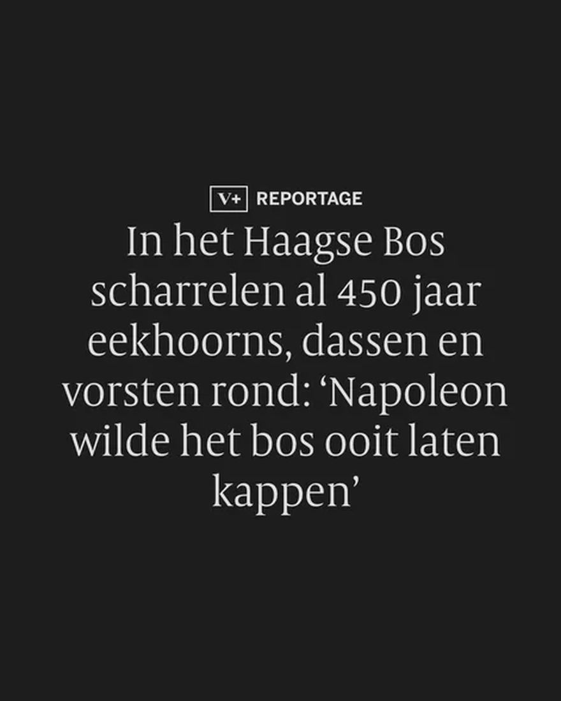
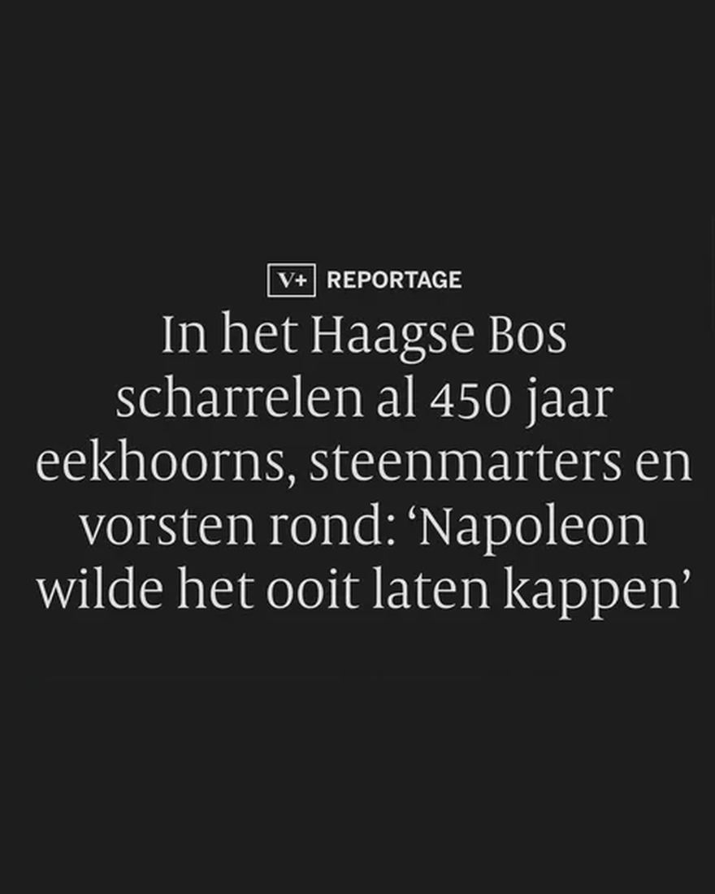
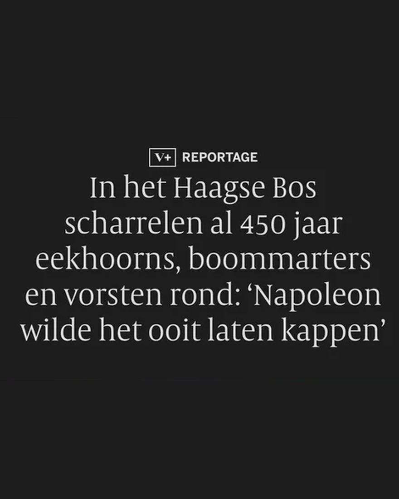

Boommarter, geen das of steenmarter
25 augustus 2026 · de Volkskrant



Eén artikel, drie koppen, drie verschillende zoogdieren.
De Volkskrant schreef in januari over 450 jaar Haagse Bos. In de kop scharrelden er eerst dassen rond, daarna steenmarters, en pas in de derde versie boommarters.
Die laatste klopt: boommarters gebruiken de eekhoornbrug tussen het Haagse Bos en Clingendael. Een steenmarter zou er in theorie nog kunnen zitten. Dassen komen er niet voor.
Drie keer is scheepsrecht, @de_volkskrant!
Bron: NDFF Verspreidingsatlas en Omroep West.